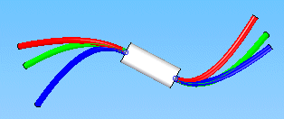
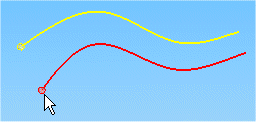
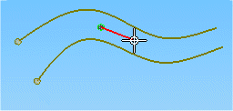
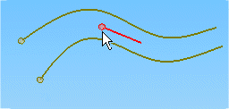
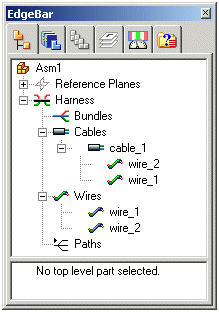

Cable command
Defines attributes for a cable that consists of a collection of wires created along a 3-D path.

When defining the cable path, you may select an existing path or define points to create a new path.
Workflow for creating cables
The workflow used by the Cable command to create a cable consists of three steps:
-
Collecting the wires to be included in the cable.
-
Defining the cable path.
-
Applying properties to the cable.
Collecting wires to be included in the cable
When you select the Cable command, the Cable command bar is displayed in the Conductor step. This step allows you to select the attributed wires you want to include in the cable. The point that you click specifies the starting point for the cable.

You can click the Create Path button without selecting any wires to create a cable that does not contain wires. Later, you can edit the cable to include wires.
Defining the cable path
After selecting the wires to include, click the Accept (checkmark) button to accept the input and move to the Path step.
When defining the path, you can click points to create the path,

or you can select an existing path created with the Path command.

Applying properties to the cable
Once you accept the path, the command bar moves to the Properties step.
You can select the Material property from a list that contains values found in the cables portion of the SEConductors.txt file located in the Solid Edge Preferences folder.
You can also click the Properties button to display the Properties dialog box, which allows you to change the properties for the cable. For pre-defined properties such as Slack and Clearance Through Holes, you can use the default values that are specified on the Harness tab of the Options dialog box, or you can type in a value.
After defining the properties for the cable, click the Preview button to accept the input and move to the Finish step where the default cable name is displayed. At this point you can change the cable name, return to the previous step to make changes, or click Finish to complete the command.
After creating the cable, any wires included in the collection used to create the cable are listed in Assembly PathFinder beneath the new cable.

Editing cables
After creating a cable, you can make changes to either the path or cable attributes.
The Edit Definition command displays the Edit Definition command bar that allows you to change the wires in the cable, the path or attributes. To access the command, right-click the mouse button on the wire and click Edit Definition on the shortcut menu.
Clicking the Path Step option on the command bar displays additional options that allow you to change the selection of wires included in the cable, redefine the points for the path, select a new path for the wire to follow, and adjust the endpoints to control tangency of the path.
Clicking the Properties Step option displays additional options that allow you to make changes to the attributes associated with the wire.
The Edit Path command displays the Edit Path command bar that allows you to change the path. To access the command, right-click the mouse button on the wire and click Edit Path on the shortcut menu.
Clicking the Select Points Step option on the command bar displays additional options that allow you to redefine the points for the path.
Clicking the End Conditions Step option displays additional options that allow you to set the end tangent conditions for the path.
The Delete command deletes the cable, along with any wires and paths used to create the cable. Use the Remove command on the Assembly PathFinder shortcut menu to remove only the cable and preserve the cable path and associated wires.
Minimum bend radius and hole diameter clearance
The Cable command follows the same guidelines for checking minimum bend radius and hole diameter clearance as the Wire command. For more information on minimum bend radius violations and hole diameter clearance, see the Wire Command help topic.
How do I
Route a harness entity along a surfaceEdit the path of a electrical routing conductor
Construct a path through selected keypoints
Display Properties for a Harness Element
Create a wire
Create a cable
Create a wire harness bundle
Add a splice
Display Harness Elements
Create a harness component solid body
Delete a wire component solid body
Learn more
Creating the electrical routing manuallyCreating harness component solid bodies
Removing conductors
Look up more details
Path commandEdit Path Command
Path command bar
Route command
Route along Surface command
Route along Surface command bar
Show All Paths command
Wire command
Wire command bar
Show All Wires command
Hide All Wires command
Wire Properties Command
Cable command bar
Show All Cables command
Hide All Cables command
Bundle command
Bundle command bar
Show All Bundles command
Hide All Bundles command
Splice command
Splice command bar
Splice Properties dialog box
Assign Terminals dialog box (Splice)
Create Physical Conductor command
Delete Physical Conductor command
Show Physical Conductor command
Show All Physical Conductors command
Hide Physical Conductor command
Hide All Physical Conductors command
Show All Harnesses command
Hide All Harnesses command
Remove command (Electrical Routing)
PathFinder in electrical routing
Related Topics
Create a bundle across a spliceAdd a wire to a splice
Remove a wire from a splice
Change the splice location
Change splice properties